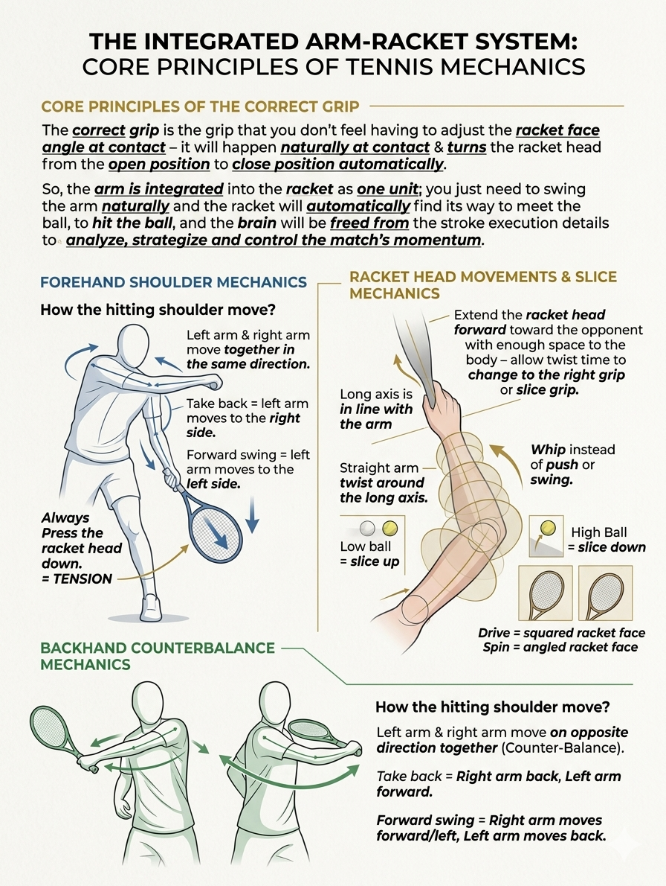

Visual Coaching Library
Two-Handed Power — 1H vs 2H, Coiled & Locked
3 cards · master-coach-direct
Backhand là cú đánh khó nhất trong tennis với 90% người chơi nghiệp dư — vì nó đi ngược lại với tay thuận. Sổ tay của bạn (1Hto2H backhand.md) chỉ ra 5 điểm làm người chơi 1 tay bị 'khựng' khi đổi sang 2 tay: điểm chạm, cấu hình tay, bộ chân, take-back, và racket head drop.
Hai ảnh dưới đây tập trung vào cấu hình cơ thể (anatomical cheat-sheet) và nguyên tắc 'unlearn 3 phản xạ': chờ bóng xa, dùng tay phải dẫn, bước chéo cố định.
June 2026 — bilingual EN + VI
Source: MD notes + Gemini-generated images
Index of Cards
- Backhand Mechanics Diagram · quality: 4/5
- The 5-Point Switch: 1H to 2H Backhand · quality: 3/5
- Integrated arm-racket system (forehand/backhand/slice) · quality: 4/5

EN: Backhand Mechanics Diagram
VI: Sơ đồ Cơ học cú Backhand
Quality: 4/5 (vision-QA, June 2026) · Path: Gemini_Generated_Image_t4jo8pt4jo8pt4jo.png
Anatomical cheat-sheet for the two-handed backhand — locked shoulders, side-on stance, color-coded muscle groups, bilingual VI+EN labels.
CUE (EN)
"Two-handed backhand = locked shoulders + side-on stance. Front leg straight, back leg bent. The non-dominant arm pulls; the dominant arm guides."
CUE (VI)
"Backhand 2 tay = khóa vai + stance nghiêng. Chân trước duỗi, chân sau gập. Tay không thuận kéo; tay thuận dẫn hướng."
What the diagram is saying
- Title: 'BACKHAND MECHANICS DIAGRAM' — sourced from PXL_20260614_170745798.jpg
- Anatomical figure: side-on stance, racket drawn back, semi-open body position, front leg straight, back leg bent.
- Color-coded muscle groups: dominant ('Tay/Chân thực') vs non-dominant ('Tay/Chân hư') arm/leg roles.
- Bilingual VI+EN labels: distinguishes L shoulder / R shoulder, true-arm vs phantom-arm roles.
Practical Instructions (Hướng Dẫn Thực Hành)
1. Stand side-on, racket in front of chest, both hands on the racket for stability.
1. Đứng nghiêng bên, vợt trước ngực, hai tay trên vợt để ổn định.
2. Use Continental grip (or Eastern for one-hander) — index knuckle on bevel 2 or 3.
2. Dùng grip Continental (hoặc Eastern cho one-hander) — đốt ngón trỏ trên bevel 2 hoặc 3.
3. Coil the shoulders, hinge the wrist back, then rotate the hip to drive the swing.
3. Xoắn vai, bản lề cổ tay ra sau, rồi xoay hông để dẫn cú vung.
4. At contact: meet the ball out in front, racket face vertical, chest compressing forward.
4. Ở tiếp xúc: gặp bóng phía trước, mặt vợt dọc, ngực nén về trước.
5. Biceps locked to chest, follow-through wraps around the left shoulder for the two-hander.
5. Biceps khóa vào ngực, follow-through vòng qua vai trái cho two-hander.

EN: The 5-Point Switch: 1H to 2H Backhand
VI: 5 điểm chuyển tay: 1H sang 2H Backhand
Quality: 3/5 (vision-QA, June 2026) · Path: Volley Less Is More Blueprint.png
Reuse of volley blueprint as a contrast piece: 1H requires one mentality, 2H requires unlearning 3 reflexes. (Caption placeholder until a more specific 2H image is curated.)
CUE (EN)
"Switching 1H→2H: unlearn 3 reflexes — wait ball deep, lead with right hand, fixed cross-step. 2H needs early contact, left-arm dominance, hip rotation."
CUE (VI)
"Chuyển 1H→2H: bỏ 3 phản xạ — chờ bóng xa, tay phải dẫn, bước chéo cố định. 2H cần đánh sớm, tay trái làm chủ, xoay hông."
What the diagram is saying
- Reused image — full content about the 1H→2H transition is in the source notes, not in the image.
- Image serves as a visual anchor for the 'less is more' philosophy that also applies to backhand switching.
- Use this as a contrast page: simpler is better when changing strokes.
Practical Instructions (Hướng Dẫn Thực Hành)
1. Unlearn 3 reflexes: stop waiting for the ball to come deep — contact earlier.
1. Bỏ 3 phản xạ: dừng chờ bóng xa — tiếp xúc sớm hơn.
2. Stop leading with the right hand — let the left arm dominate the swing direction.
2. Dừng dẫn bằng tay phải — để tay trái làm chủ hướng vung.
3. Stop the fixed cross-step — learn to rotate the hips and lower the body instead.
3. Dừng bước chéo cố định — học xoay hông và hạ thấp thân.
4. Make early contact, around waist height, instead of waiting for the ball to drop.
4. Tiếp xúc sớm, khoảng ngang hông, thay vì chờ bóng rơi.
5. Use hip rotation to generate power — the arms transfer, the body creates.
5. Dùng xoay hông để tạo lực — tay truyền, thân tạo.

EN: Integrated arm-racket system (forehand/backhand/slice)
Quality: 4/5 (vision-QA, June 2026) · Path: Gemini_Generated_Image_2279c42279c42279.png
Integrated arm-racket system (forehand/backhand/slice)
CUE (EN)
"Master-coach focus: Integrated arm-racket system (forehand/backhand/slice)"
CUE (VI)
""
What the diagram is saying
- Diagrammatic illustration: Integrated arm-racket system (forehand/backhand/slice)
Practical Instructions (Hướng Dẫn Thực Hành)
1. Treat the arm and racket as one unit — one weight, one swing, one connection.
1. Coi tay và vợt là một đơn vị — một trọng lượng, một cú vung, một kết nối.
2. Move the unit, not the parts — the forearm is the connector, shoulder drives the unit.
2. Di chuyển cả đơn vị, không từng phần — cẳng tay là connector, vai dẫn đơn vị.
3. Forehand, backhand, slice all use the same integrated principle: whole-arm is one piece.
3. Forehand, backhand, slice đều dùng cùng nguyên lý hợp nhất: cả-tay là một mảnh.
4. At contact, the wrist is stable, the arm extends through the ball, the body commits forward.
4. Ở tiếp xúc, cổ tay ổn định, tay duỗi qua bóng, thân commit tới.
5. Recovery: wrap around the shoulder, return to ready, do not flick the racket head.
5. Hồi phục: vòng qua vai, về tư thế sẵn sàng, không flick đầu vợt.
3 takeaway cuối
- (1) 2H backhand = locked shoulders + side-on stance. Đừng để vai bung sớm.
- (2) Tay trái (với người thuận tay phải) là động cơ chính, không phải tay phải. Phải 'unlearn' cảm giác dẫn bằng tay thuận.
- (3) 3 phản xạ phải bỏ: chờ bóng xa, dùng tay phải dẫn, bước chéo cố định. Shadow 2H không bóng, tay trái cầm vợt đánh thuận tay, tay phải chỉ đặt nhẹ.
Drills tham khảo (20-min practice)
- 5 phút Shadow 2H: tay trái cầm vợt đánh thuận tay, tay phải chỉ đặt nhẹ. Không bóng.
- 5 phút Wall rally với grip 2H: đánh vào tường 3m, tập điểm chạm gần ngực thay vì với xa.
- 5 phút Take-back 2H: vung 2 tay ra sau cùng lúc, vai trái gần như quay về lưới. Không dùng cú 1H take-back ngắn.
- 5 phút Drop drill: hạ gối sâu + drop racket head. Bóng thấp = cú 2H cần drop nhiều hơn 1H.
End of BACKHAND
Henry Pham · Visual Coaching Library · Pilot Series · June 2026